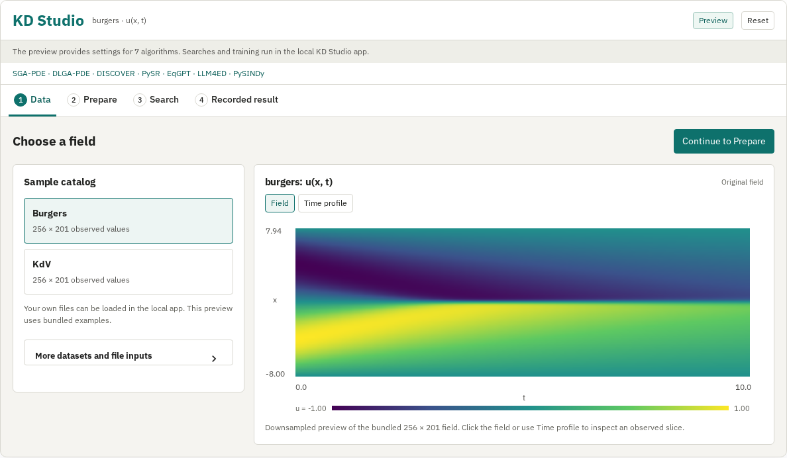
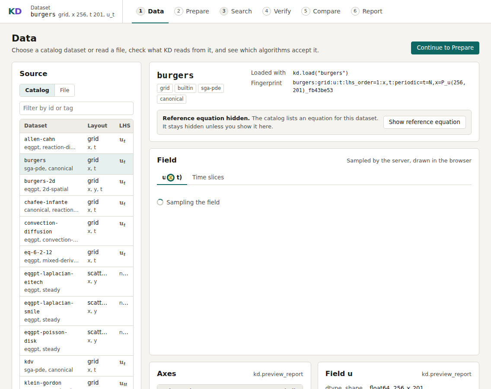
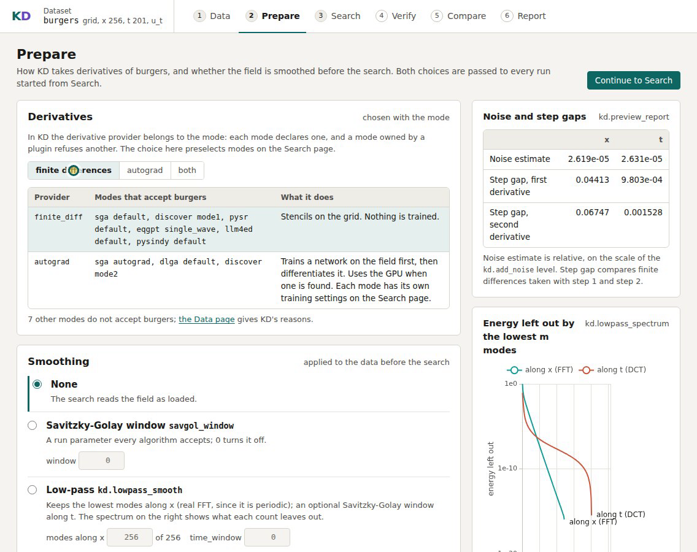
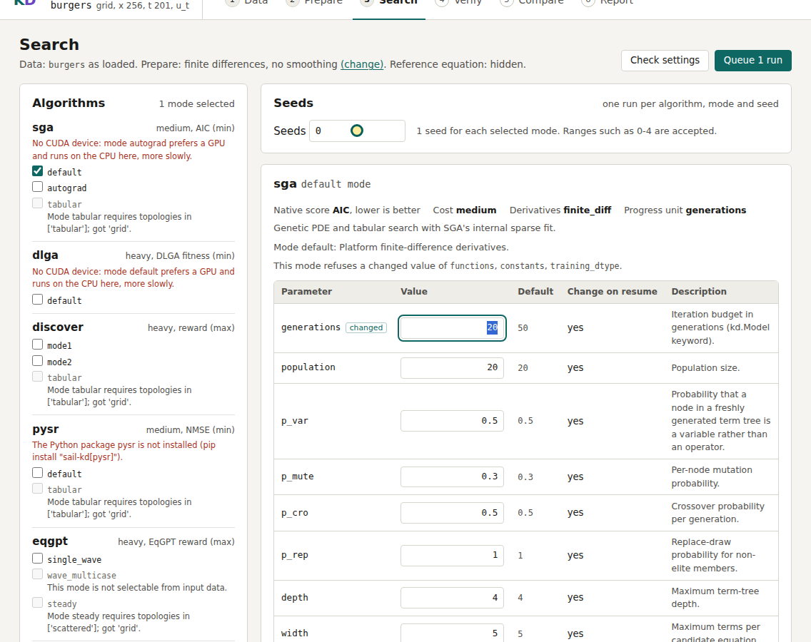
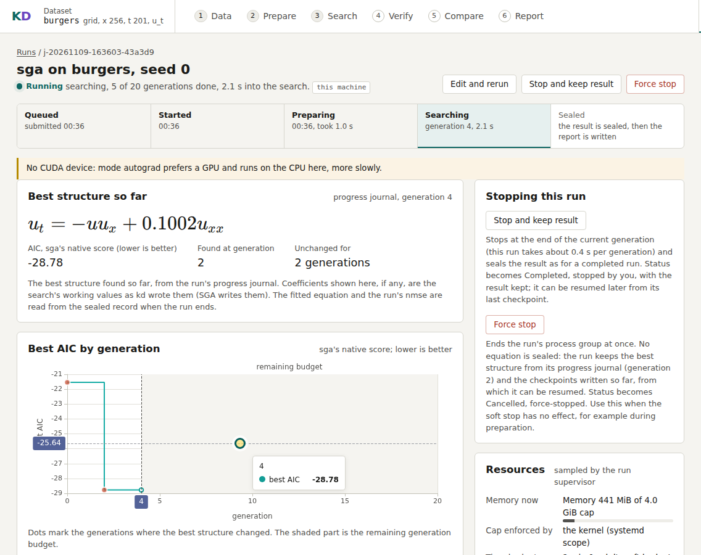
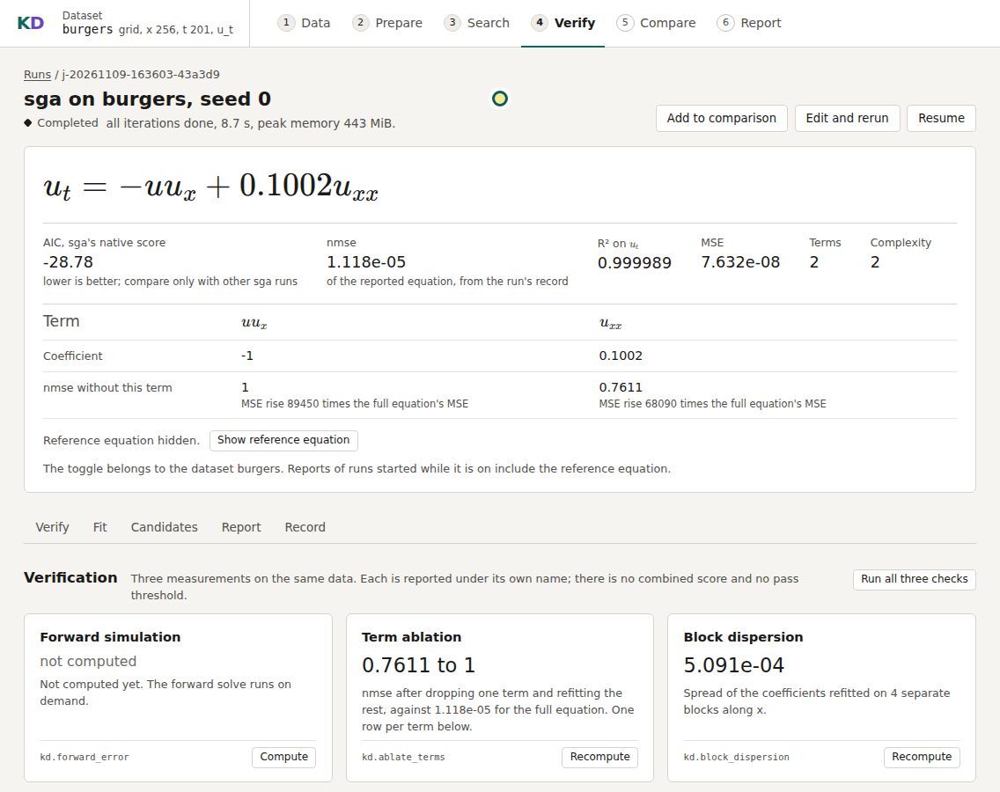

KD Studio
KD Studio provides data loading, search configuration, result inspection and comparison in a local browser workspace. This guide uses a recorded SGA-PDE search on Burgers data in KD 0.10.0, followed by verification and comparison with another algorithm. It also covers saved runs and workspace history.
The KD Studio quick start covers installation and a first search. The project README links the video of the recorded search.

Start a workspace
KD Studio supports Linux, WSL and Windows. In an activated Python 3.11+ environment, install the UI extra and start KD:
uv pip install "sail-kd[ui]" --torch-backend=auto
kd-ui --workspace ./kd-ui-workspace
With pip, use python -m pip install "sail-kd[ui]". The
installation guide covers environment creation,
activation and PyTorch builds. Open the full URL printed in the terminal;
it signs your browser into this workspace. Keep the terminal open while using
the interface. KD serves the pages on your own machine.
Choose and inspect data
On Data, select burgers in the catalog. The field preview shows u
on a grid of 256 spatial points and 201 time points. Keep the default field
view for this walkthrough. The axes and field statistics help you check that
KD has read the intended values and coordinates.

The reference equation is hidden until you choose Show reference equation. Leave it hidden during this walkthrough; the search takes the observed field as input. For your own measurements, choose File, upload a file or enter its local path, inspect the arrays, and map coordinates, fields and the left-hand side. Data requirements explains the supported layouts and file mappings.
The separate Time slices view is available for inspecting individual profiles.
Prepare the search input
Choose Continue to Prepare. This page exposes derivative and smoothing choices, along with previews of their effects. For the bundled clean Burgers example, keep finite differences and no smoothing. Continue to Search.

For noisy measurements, inspect the original and prepared fields before launching a search. A smoothing choice belongs to that run's configuration; the original dataset remains available for comparison.
Configure and launch SGA
The Prepare page preselects compatible algorithm modes. In the algorithm list,
uncheck the other selected modes and keep only sga default. Set generations to
20 and Seeds to 0, leaving the other algorithm parameters at their
defaults. The parameters are taken from KD's algorithm schemas. Review the
memory and time limits; the recording uses a 4 GiB cap and a two-minute soft
time budget. Choose Check settings and Queue 1 run.
The Queued panel appears after submission. Click the job link in its first column to open the live run page. The header navigation also keeps the data, preparation and search pages available.

Each selected algorithm, mode and seed produces its own job. You can submit several seeds together; the queue runs fits one at a time by default. The run page reports the phase, the best expression so far and the algorithm's score history. The progress curve below belongs to the recorded 20-generation run.

Inspect the equation and checks
When the run is complete, click Open result at the top of the run page. The page shows the selected equation and its coefficients, the algorithm's native score and the fit metrics. Fit leads to figures such as the coefficient chart, expression tree, residuals and field comparisons; Report opens the generated HTML report. Report compatibility records the environment used for this walkthrough and the report-export workaround.

Read the verification checks separately:
- Term ablation removes one term at a time and measures the resulting fit error. It indicates how much the fitted law depends on each term.
- Block dispersion compares coefficients fitted on separate spatial blocks. It describes variation across those blocks.
- Forward simulation integrates the equation and compares its predicted field with the observations. Request this check from the verification panel; it runs as a separate queued operation.
A small residual alone does not establish that the equation reproduces the field over time. The report explanation explains the distinction between the residual and forward prediction.
Compare with another algorithm
Return to Search, select only pysindy default, keep seed 0 and the
default parameters, and queue the run on the same dataset without smoothing.
From the result pages, choose Add to comparison, or select both completed
runs on Compare. Choose Re-measure in the shared frame.
Use the shared-frame NMSE to compare the fitted equations on the same data. The table also preserves each algorithm's native score under its own name; SGA's AIC and PySINDy's native score are not the same quantity. The score guide explains the remeasurement.
To try another setting, use Edit and rerun. KD opens the previous configuration for editing and keeps the new run separate from its source.
Return to the workspace
Uploads, datasets and run history are stored in kd-ui-workspace. Stop the
web server with Ctrl+C. Next time, run the same command with the same workspace
path and open the newly printed URL. All runs and history lists the saved
runs; the comparison and result pages can be reopened without repeating a fit.
You can also add a directory containing runs made outside the UI through the run-folder controls. For scripted experiments, continue with the Quick start; for language-model-assisted discovery, see the controller guide.